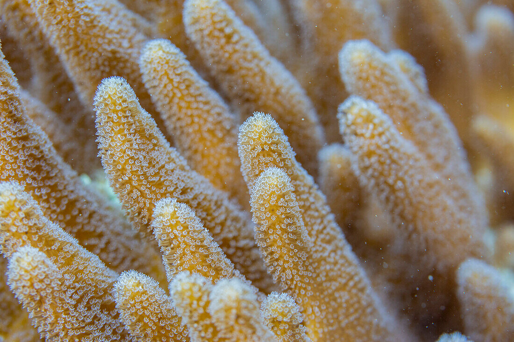
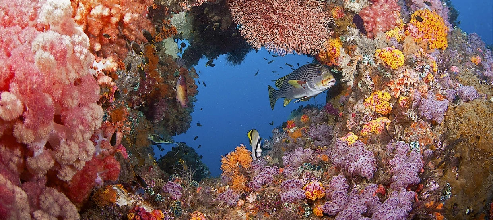

Über Korallenriffe
Was sind Korallenriffe?
Korallenriffe gehören zu den faszinierendsten Ökosystemen unserer Erde. Sie werden oft als die "Regenwälder der Meere" bezeichnet, weil sie so viele verschiedene Lebewesen beherbergen. Obwohl Korallenriffe nur etwa 0,1% des Meeresbodens bedecken, sind sie die Heimat für mehr als 25% aller Meeresbewohner!
Aber was genau sind Korallen? Viele Menschen denken, dass Korallen Pflanzen sind - aber das stimmt nicht! Korallen sind tatsächlich winzige Tiere, die in großen Kolonien zusammenleben. Diese Tiere nennt man Polypen. Sie sind mit den Quallen verwandt und haben einen weichen Körper mit kleinen Tentakeln, mit denen sie Nahrung aus dem Wasser filtern.
Das Besondere an Korallen ist, dass sie ein hartes Skelett aus Kalk bauen. Dieses Skelett gibt den Korallen ihre Form und Struktur. Wenn Korallen sterben, bleiben ihre Kalkskelette zurück. Neue Korallen siedeln sich auf diesen alten Skeletten an und bauen so über viele Jahre hinweg riesige Riffstrukturen auf.
Wusstest du schon?
- Das Great Barrier Reef in Australien ist das größte Korallenriff der Welt und sogar aus dem Weltraum sichtbar!
- Manche Korallenriffe sind über 50 Millionen Jahre alt.
- Ein Quadratmeter Korallenriff kann bis zu 1.000 verschiedene Arten beherbergen.
Die bunte Welt der Korallen
Hast du dich schon einmal gefragt, warum Korallen so bunt sind? Die meisten Korallen leben in einer besonderen Partnerschaft mit winzigen Algen, die in ihrem Gewebe leben. Diese Algen heißen Zooxanthellen und betreiben Photosynthese - sie nutzen Sonnenlicht, um Energie zu erzeugen. Die Algen teilen diese Energie mit den Korallen und geben ihnen ihre leuchtenden Farben.
Diese Partnerschaft ist sehr wichtig für die Korallen. Sie bekommen bis zu 90% ihrer Nahrung von den Algen! Deshalb brauchen Korallen auch klares, sonnendurchflutetes Wasser, damit ihre Algenpartner genug Licht für die Photosynthese bekommen.
Warum sind Korallenriffe wichtig?
Korallenriffe sind nicht nur wunderschön anzusehen, sondern erfüllen auch viele wichtige Funktionen:
- Lebensraum: Sie bieten Nahrung und Schutz für tausende Arten von Fischen, Krebsen, Schnecken und anderen Meeresbewohnern.
- Küstenschutz: Riffe schützen Küsten vor Wellen und Stürmen, indem sie wie natürliche Wellenbrecher wirken.
- Nahrungsquelle: Viele Menschen auf der ganzen Welt sind für ihre Ernährung auf Fische und andere Tiere angewiesen, die in Korallenriffen leben.
- Medizin: Wissenschaftler entdecken in Korallenriffen immer wieder neue Substanzen, die für Medikamente gegen Krankheiten wie Krebs oder Alzheimer verwendet werden können.
- Tourismus: Viele Menschen reisen um die Welt, um die Schönheit der Korallenriffe beim Schnorcheln oder Tauchen zu erleben.
Entstehung von Korallenriffen
Die Entstehung eines Korallenriffs ist ein faszinierender Prozess, der sehr viel Zeit in Anspruch nimmt. Korallenriffe wachsen extrem langsam - die meisten Korallenarten wachsen nur wenige Zentimeter pro Jahr. Deshalb brauchen große Riffe Hunderte oder sogar Tausende von Jahren, um ihre beeindruckende Größe zu erreichen.
Der Beginn eines Riffs
Ein neues Korallenriff beginnt, wenn sich freischwimmende Korallenlarven (sogenannte Planulae) auf einem geeigneten Untergrund niederlassen. Dies kann ein Felsen, ein Schiffswrack oder sogar ein anderes abgestorbenes Riff sein. Die wichtigsten Voraussetzungen sind:
- Fester Untergrund zum Festhalten
- Warmes, klares Wasser (20-28°C)
- Ausreichend Sonnenlicht für die Zooxanthellen
- Geringer Nährstoffgehalt im Wasser
Sobald sich die Larve festgesetzt hat, verwandelt sie sich in einen Polypen und beginnt, ein Kalkskelett zu bilden. Dieser erste Polyp teilt sich und bildet weitere Polypen, die alle miteinander verbunden bleiben. So entsteht nach und nach eine Korallenkolonie.
Vom kleinen Polypen zum großen Riff
Während die Korallen wachsen und sich vermehren, bilden sie immer größere Kolonien. Wenn Korallen sterben, bleiben ihre Kalkskelette zurück und bilden die Grundlage für neue Generationen von Korallen. Über viele Jahre hinweg entsteht so eine komplexe dreidimensionale Struktur.
Nicht nur Korallen tragen zum Wachstum des Riffs bei. Auch andere kalkbildende Organismen wie Kalkalgen, Muscheln und bestimmte Würmer fügen dem Riff Material hinzu. Gleichzeitig arbeiten Organismen wie Papageifische, Bohrwürmer und Schwämme daran, das Riff abzubauen und zu formen, indem sie Korallenstücke abbeißen oder Löcher bohren.
Wusstest du schon?
Das Great Barrier Reef vor der Küste Australiens ist zwischen 6.000 und 8.000 Jahre alt und hat sich auf dem Kontinentalschelf gebildet, als der Meeresspiegel nach der letzten Eiszeit anstieg.
Herkunft und Geschichte der Korallenriffe
Korallenriffe haben eine lange und faszinierende Evolutionsgeschichte, die bis weit in die Erdgeschichte zurückreicht. Die ersten riffbildenden Organismen entstanden bereits vor über 3,5 Milliarden Jahren in Form von Stromatolithen (Strukturen aus Cyanobakterien).
Die ersten Korallenriffe
Die ersten echten Korallenriffe, die von Korallen ähnlich den heutigen gebildet wurden, entstanden im Ordovizium vor etwa 485 Millionen Jahren. Diese frühen Riffbildner waren jedoch keine Steinkorallen wie heute, sondern Rugosa- und Tabulata-Korallen, die inzwischen ausgestorben sind.
Die modernen Steinkorallen (Scleractinia), die heute die Hauptriffbildner sind, tauchten erst im Trias vor etwa 240 Millionen Jahren auf. Sie überlebten das große Massenaussterben am Ende der Kreidezeit vor 66 Millionen Jahren, bei dem viele andere Meereslebewesen verschwanden.
Wusstest du schon?
Korallenfossilien gehören zu den ältesten bekannten Tierfossilien der Erde. Einige sind über 500 Millionen Jahre alt!
Korallenriffe im Wandel der Zeit
Im Laufe der Erdgeschichte haben Korallenriffe immer wieder dramatische Veränderungen durchgemacht. Während der Eiszeiten, als der Meeresspiegel deutlich niedriger war, lagen viele Riffe trocken und starben ab. Als der Meeresspiegel wieder anstieg, bildeten sich neue Riffe auf den Überresten der alten.
Die heutigen tropischen Korallenriffe, wie wir sie kennen, haben sich in den letzten 10.000 Jahren seit dem Ende der letzten Eiszeit entwickelt. Das Great Barrier Reef zum Beispiel ist in seiner heutigen Form erst 6.000 bis 8.000 Jahre alt, obwohl es auf viel älteren Riffstrukturen aufbaut.
Kulturelle Bedeutung
Korallenriffe haben auch in der menschlichen Kultur eine lange Geschichte. Für viele Inselvölker im Pazifik und im Indischen Ozean sind Korallenriffe seit Jahrtausenden Lebensgrundlage und haben eine tiefe spirituelle Bedeutung.
In Europa wurden Korallen seit der Antike als Schmuck und für medizinische Zwecke verwendet. Rote Korallen galten als Schutz gegen böse Geister und wurden Kindern als Amulett umgehängt. Im Mittelalter glaubte man, dass Korallen Blitzschlag abwehren könnten.
Die wissenschaftliche Erforschung der Korallenriffe begann im 18. Jahrhundert. Charles Darwin entwickelte während seiner Reise mit der HMS Beagle (1831-1836) eine Theorie zur Entstehung von Atollen, die bis heute grundlegend für unser Verständnis der Riffbildung ist.
Verbreitung von Korallenriffen
Korallenriffe sind nicht gleichmäßig über die Weltmeere verteilt. Die meisten Riffe finden sich in einem Band rund um den Äquator zwischen dem nördlichen und südlichen Wendekreis (23,5° nördlicher und südlicher Breite). Diese Verteilung ist kein Zufall, sondern hängt mit den speziellen Bedingungen zusammen, die Korallen zum Überleben brauchen.
Der Korallenriffgürtel
Die größte Vielfalt an Korallenriffen findet sich im sogenannten "Korallendreick" im westlichen Pazifik zwischen Indonesien, Malaysia, den Philippinen, Papua-Neuguinea, den Salomonen und Timor-Leste. Dieses Gebiet gilt als das globale Zentrum der marinen Artenvielfalt.
Weitere bedeutende Riffgebiete sind:
- Das Great Barrier Reef vor der Nordostküste Australiens
- Die Riffe des Roten Meeres
- Die Malediven und Seychellen im Indischen Ozean
- Die Riffe der Karibik
- Die Riffe rund um Hawaii und im zentralen Pazifik

Warum wachsen Korallen nur in bestimmten Gebieten?
Die Verbreitung von Korallenriffen wird durch verschiedene Umweltfaktoren bestimmt:
- Temperatur: Riffbildende Korallen benötigen warmes Wasser zwischen 20°C und 28°C. Bei niedrigeren Temperaturen wachsen sie zu langsam, bei höheren Temperaturen besteht die Gefahr der Korallenbleiche.
- Licht: Da die Zooxanthellen in den Korallen Photosynthese betreiben, brauchen Korallen viel Sonnenlicht. Deshalb wachsen sie meist in Tiefen von weniger als 30 Metern.
- Wasserqualität: Korallen benötigen klares Wasser mit geringem Nährstoffgehalt. Trübes oder verschmutztes Wasser behindert ihr Wachstum.
- Salzgehalt: Korallen bevorzugen einen stabilen Salzgehalt von etwa 35 Promille. In der Nähe von Flussmündungen, wo der Salzgehalt schwankt, können sie nicht gut überleben.
- Strömung: Eine moderate Wasserströmung versorgt die Korallen mit Nahrung und Sauerstoff und verhindert die Ablagerung von Sedimenten.
Wusstest du schon?
Es gibt auch Kaltwasserkorallen, die in Tiefen von bis zu 3.000 Metern und in Wassertemperaturen von nur 4°C leben können. Diese bilden jedoch keine Riffe wie ihre tropischen Verwandten und haben keine Zooxanthellen.
Bedrohung und Rückgang
Leider sind Korallenriffe weltweit stark bedroht. Wissenschaftler schätzen, dass bereits etwa 20% aller Korallenriffe unwiederbringlich zerstört sind und weitere 50% stark gefährdet sind. Die Hauptbedrohungen sind:
- Klimawandel und die damit verbundene Erwärmung der Meere
- Versauerung der Ozeane durch erhöhte CO₂-Aufnahme
- Überfischung und destruktive Fischereimethoden
- Verschmutzung durch Abwässer, Plastik und Chemikalien
- Küstenentwicklung und Tourismus
Der Schutz der verbleibenden Korallenriffe ist eine der größten Umweltherausforderungen unserer Zeit. Durch die Einrichtung von Meeresschutzgebieten, nachhaltige Fischerei und Maßnahmen gegen den Klimawandel versuchen Wissenschaftler und Umweltschützer, diese einzigartigen Ökosysteme für die Zukunft zu bewahren.
Die Bewohner der Korallenriffe
Korallenriffe sind wie riesige bunte Städte unter Wasser. Hier leben viele Tiere zusammen – vom kleinen Seestern bis zum großen Hai!
Wer lebt im Riff?
- Clownfische: Die berühmten „Nemos“ leben in Seeanemonen und verstecken sich in deren Tentakeln.
- Papageifische: Sie haben einen Schnabel wie ein Papagei und knabbern an Korallen.
- Seesterne & Krebse: Sie krabbeln durch das Riff und halten es sauber.
- Haie: Sie sind gar nicht so gefährlich wie man denkt – wenn man sie in Ruhe lässt, sind sie ganz friedlich.
Wie helfen sich Tiere im Riff?
Manche Tiere arbeiten sogar zusammen: Der Putzerfisch frisst Parasiten von großen Fischen – und die beißen ihn nicht!

Tag und Nacht im Riff
Tagsüber ist es hell und bunt im Riff. Nachts wird es ruhig – aber dann kommen andere Tiere heraus: schlafende Fische, leuchtende Korallen und nachtaktive Jäger.
Wusstest du schon?
Obwohl Riffe nur ganz wenig Platz im Meer einnehmen, leben dort mehr als ein Viertel aller Meeresbewohner!